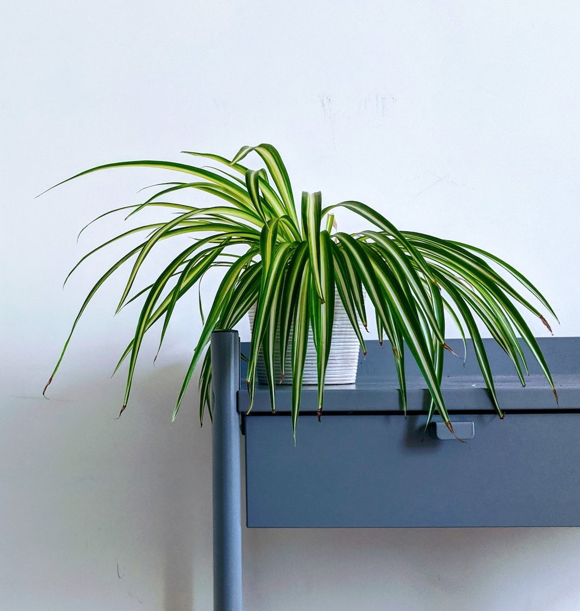

←
Spider Plant
Chlorophytum comosum
Price: $19.99 (Home Depot)
Growing Conditions:
- Medium-Bright indirect light
- Average humidity and temperature
- Fertilize during warmer months
- Water when the soil is dry
Fact: Spider plants flower, and produce “babies” at the ends of offshoots from the main plant. These plantlets can be potted to make more plants!
(Source)